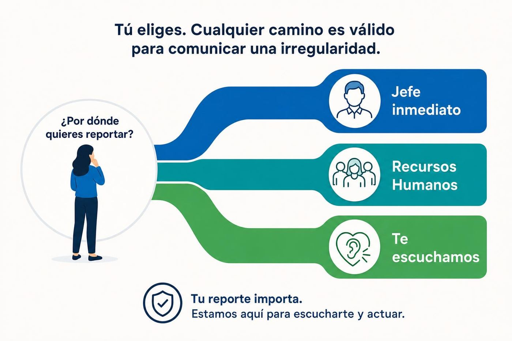

CÓDIGO DE CONDUCTA DRIMER
La forma en que actuamos también representa a Drimer.
Bienvenida
En Drimer, obtener resultados es importante. Pero también importa cómo se consiguen. El Código de Conducta establece las reglas que deben orientar el comportamiento de todos los trabajadores, sin importar el cargo, el área o el lugar donde trabajen.
En este curso conocerás qué espera Drimer de cada trabajador y qué hacer cuando una conducta no cumple con estas reglas.

2.1 Responsabilidad compartida
Velar por el cumplimiento no significa investigar, confrontar, determinar culpabilidades ni sancionar a otra persona. Significa comunicar la situación para que pueda ser atendida.
2.1 Responsabilidad compartida

2.2 Respeto e igualdad de oportunidades
Respeto e igualdad de oportunidades
Drimer promueve un ambiente de trabajo basado en respeto mutuo, confianza, cooperación e igualdad de oportunidades. No acepta intimidación, abuso, discriminación, maltrato físico, emocional o psicológico, lenguaje o gestos irrespetuosos.
- Tratar respetuosamente a todas las personas.
- Evitar insultos, burlas, amenazas, humillaciones o gestos ofensivos.
- No discriminar ni excluir a una persona.
- Aplicar criterios objetivos en decisiones bajo su responsabilidad.
- No participar ni promover conductas irrespetuosas.
Todo trabajador que observe o conozca una situación de discriminación, intimidación, abuso o maltrato debe comunicarla.

2.3 Acoso, hostigamiento y violencia
Drimer no tolera conductas verbales, no verbales o físicas que generen un ambiente intimidatorio, ofensivo, abusivo, humillante u hostil.
- Mantener una conducta respetuosa.
- Evitar comentarios, mensajes, gestos o comportamientos ofensivos.
- Respetar la dignidad y los límites de las demás personas.
- No justificar estas conductas como bromas o costumbres.
- No participar ni colaborar en violencia, acoso u hostigamiento.
Todo trabajador que observe o conozca una posible situación de acoso, hostigamiento o violencia debe comunicarla.
2.3 Acoso, hostigamiento y violencia
3.1 Trabajo infantil y responsabilidad social
Trabajo infantil y responsabilidad social
Drimer considera inaceptable participar directa o indirectamente en prácticas de explotación laboral infantil y reconoce la importancia de proteger el desarrollo físico y psicológico de niñas, niños y adolescentes.
3.1 Trabajo infantil y responsabilidad social
3.1 Trabajo infantil y responsabilidad social
3.2 Sobornos, regalos y favores indebidos
LAS DECISIONES NO SE COMPRAN
Un proveedor te ofrece un beneficio personal para que favorezcas su propuesta. Luego observas que realiza un ofrecimiento similar a otro trabajador.
¿Qué harías?

3.3 Salud y seguridad en el trabajo
NINGÚN RESULTADO JUSTIFICA TRABAJAR DE FORMA INSEGURA
3.3 Salud y seguridad en el trabajo
Durante una tarea observas que un compañero está trabajando sin el EPP requerido.
¿Qué harías?

4.1 Privacidad y protección de información
Ejemplos de información que debes cuidar
Recibes por error un archivo con información personal de otros trabajadores que no necesitas para realizar tus funciones.
¿Qué harías?
4.2 Conflictos de interés
Conflictos de interés
Existe un posible conflicto de interés cuando un interés personal, familiar o económico puede interferir o parecer interferir en la objetividad de una decisión.
- Identificar posibles intereses personales, familiares o económicos.
- Comunicar cualquier posible conflicto antes de intervenir en una decisión.
- No favorecer indebidamente a familiares, amistades o empresas vinculadas.
- No utilizar la posición para obtener beneficios personales.
- Evitar intervenir cuando la objetividad pueda estar comprometida mientras la situación es evaluada.
Todo trabajador que identifique un posible conflicto de interés no declarado que pueda afectar una decisión de Drimer debe comunicarlo.
Participas en la evaluación de un proveedor que pertenece a un familiar cercano. Además, sabes que otro evaluador mantiene una relación personal con otro proveedor y no la ha declarado.
¿Qué harías?
4.3 Compensación y cumplimiento laboral
Compensación y cumplimiento laboral
Drimer se compromete a cumplir las disposiciones aplicables relacionadas con remuneraciones, jornada de trabajo, horas extras y beneficios laborales.
Drimer cumple las disposiciones aplicables sobre remuneraciones.
Se respetan los límites de jornada de trabajo establecidos.
Se cumplen las disposiciones aplicables sobre horas extras.
Drimer cumple con los beneficios laborales que correspondan.
- Proporcionar información verdadera en los registros que le correspondan.
- No alterar, ocultar ni manipular registros laborales.
- Cumplir los procedimientos internos relacionados con su jornada y funciones.

5.1 Los tres canales de reporte
Ante cualquier posible incumplimiento del Código de Conducta, todo trabajador puede utilizar cualquiera de estas tres vías. No existe un orden obligatorio.
5.1 Los tres canales de reporte
5.2 Qué ocurre después de un reporte
REPORTAR NO SIGNIFICA DECLARAR CULPABLE A ALGUIEN
5.2 Qué ocurre después de un reporte
Cuando una situación cuente con un procedimiento especial aplicable, deberá atenderse conforme a dicho procedimiento.
5.3 Confidencialidad y no represalias
5.3 Confidencialidad y no represalias
HAS COMPLETADO EL CURSO
CÓDIGO DE CONDUCTA DRIMER
"Actuar correctamente y contribuir al cumplimiento del Código es responsabilidad de todos."